01
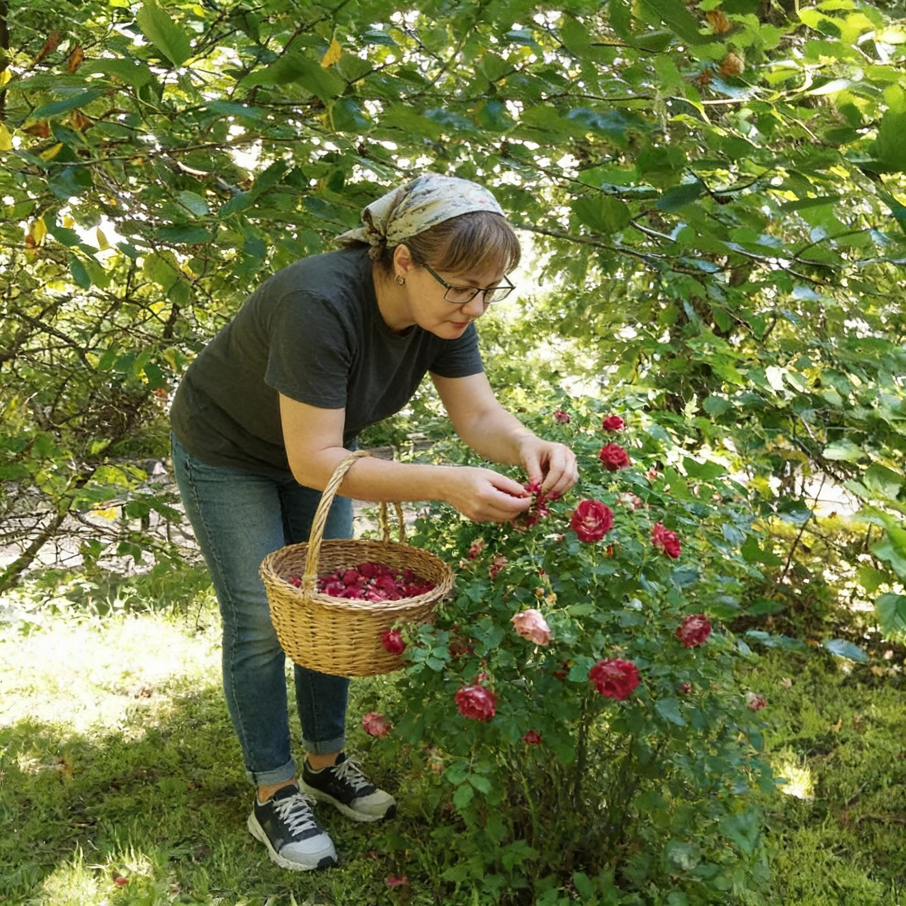
Время сбора
Беру растение тогда, когда приходит его сезон.
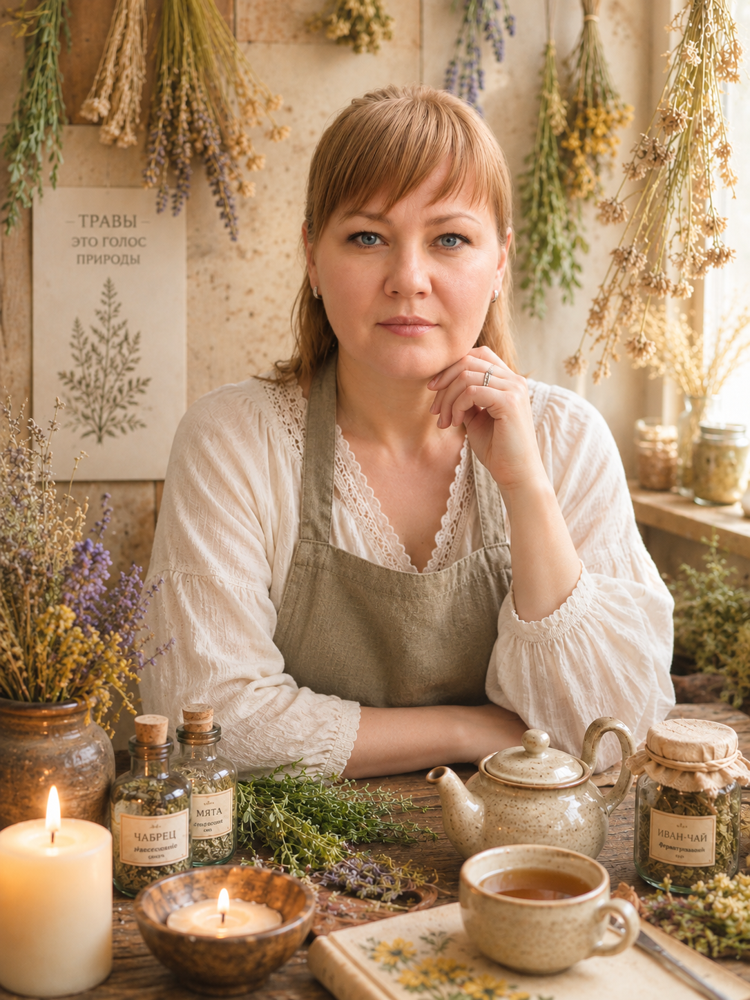
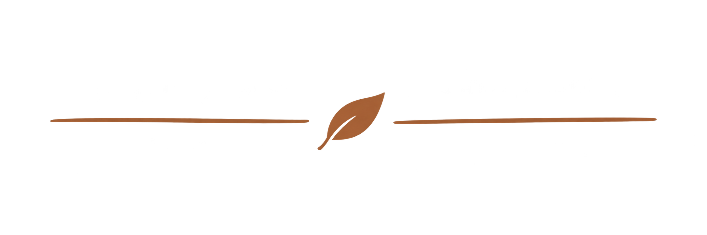
Осенние хиты
Нажмите на фотографию, чтобы рассмотреть товар
Другой аромат, объём или количество обсудим лично
Изготовление на заказ — до 5 рабочих дней
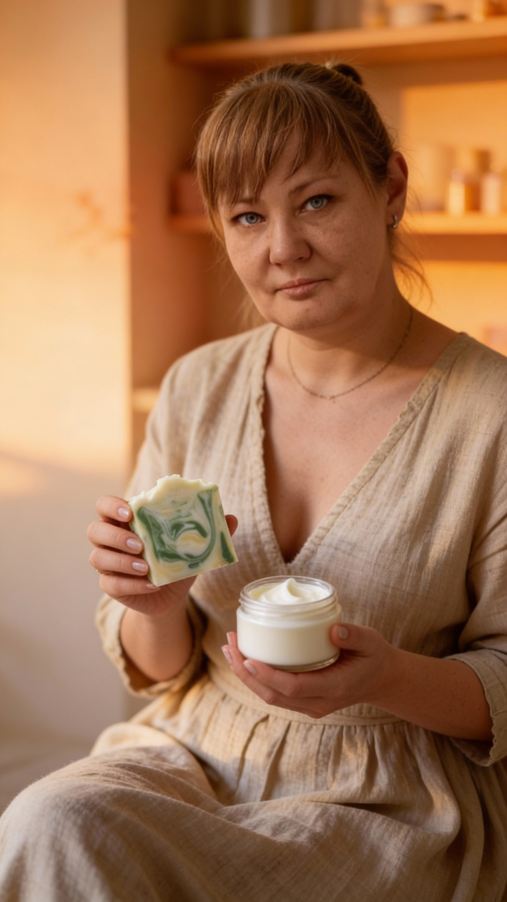
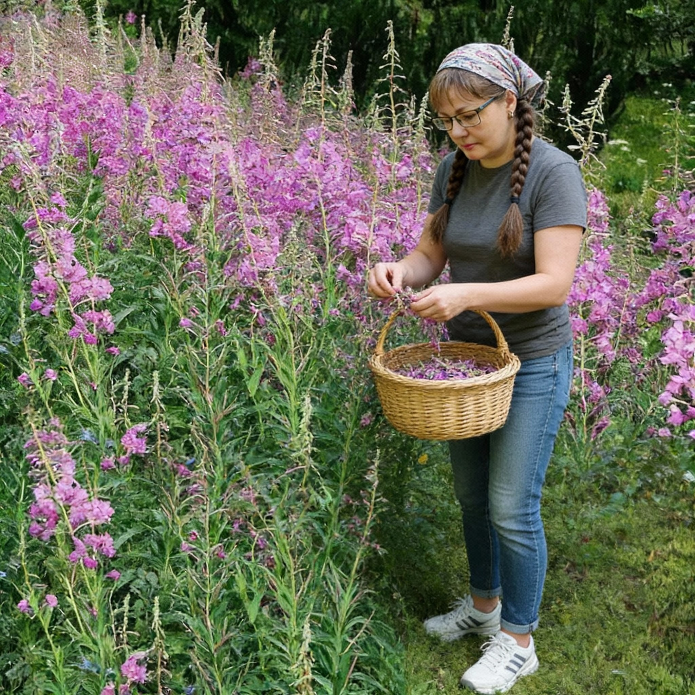
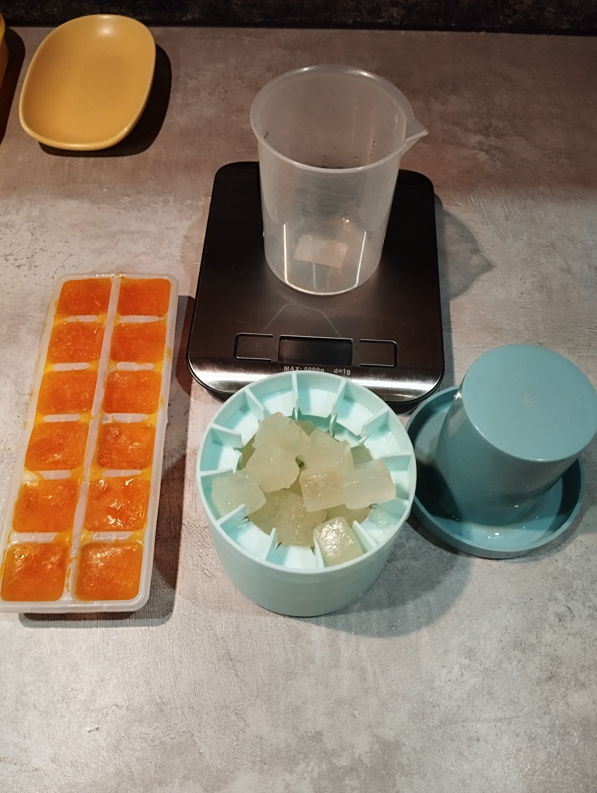
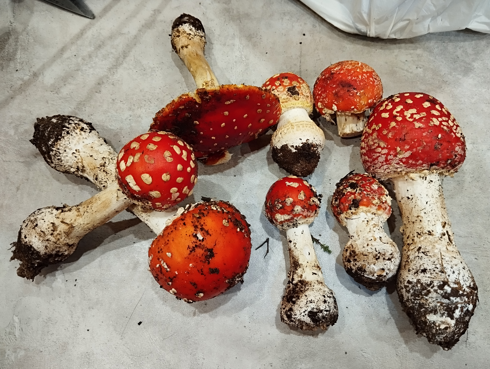
Личная мастерская
Собираю, придумываю и создаю сама
Травы я знаю с детства: всему меня учила прабабушка Акулина, которая жила в деревне. В память о ней я назвала бренд. Сегодня сама собираю дикоросы, выбираю сырьё под каждый продукт и веду рецепт от идеи до готового средства.
Это не просто бренд. Это состояние — когда ты перестаёшь спешить и возвращаешься к себе.
4 годав этом деле — от идеи до готового средства
Сырьё выбирает задача
Я работаю не с «модным ингредиентом», а с тем, что нужно конкретному продукту. Поэтому путь начинается не с банки — а с сезона, растения и цели.

Беру растение тогда, когда приходит его сезон.
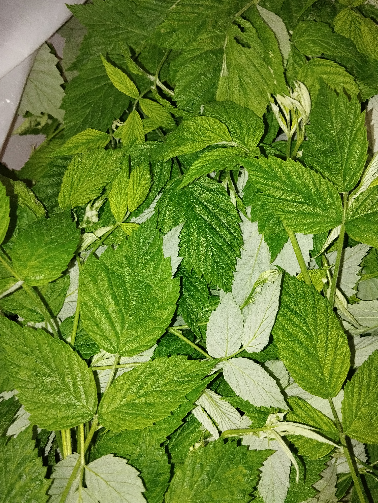
Травы, почки, листья и цветы — под задачу будущего продукта.
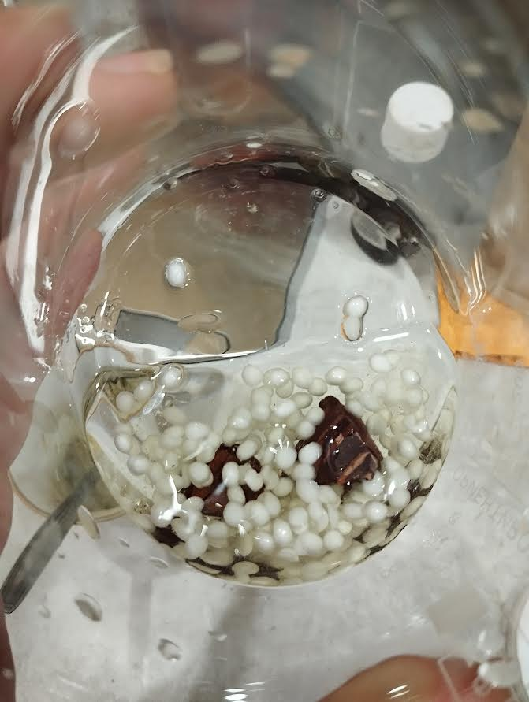
Подготавливаю сырьё и соединяю компоненты шаг за шагом.
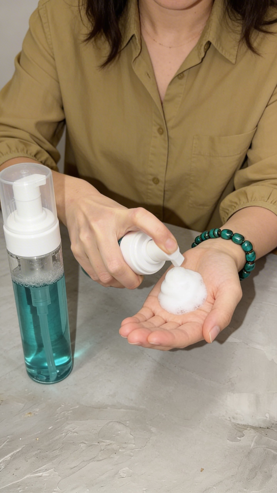
Проверяю текстуру, аромат и удобство использования.
СезонРастениеРецептСредство
Направления мастерской
Не один тип продукта, а уход и атмосфера для разных задач — от ежедневных средств до домашних ароматов.
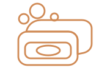
Разные способы создания — под идею, состав и характер продукта.
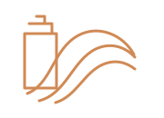
Средства для очищения и ухода за волосами.
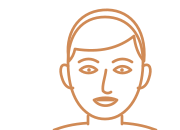
Очищение и уход за кожей лица.
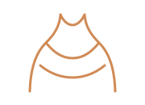
Повседневный уход за кожей тела.
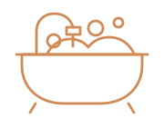
Средства для ванны и домашних ритуалов.
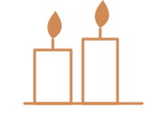
Тёплый свет и атмосфера для дома.
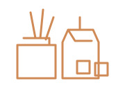
Разные форматы, чтобы наполнить пространство выбранным ароматом.
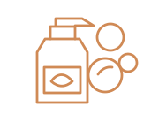
Натуральные средства для чистоты дома — с понятным составом и без лишнего.
Сейчас это обзор направлений. Каталог появится позже.
Осенний хит
Написать и заказать